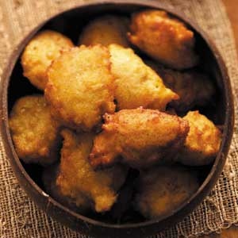
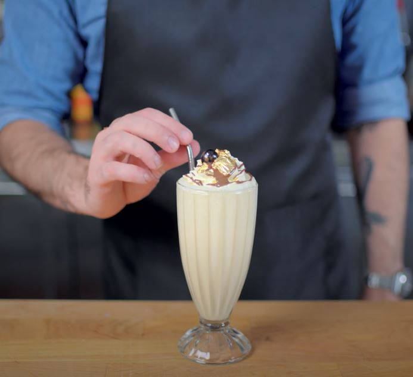
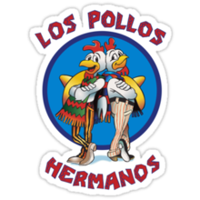
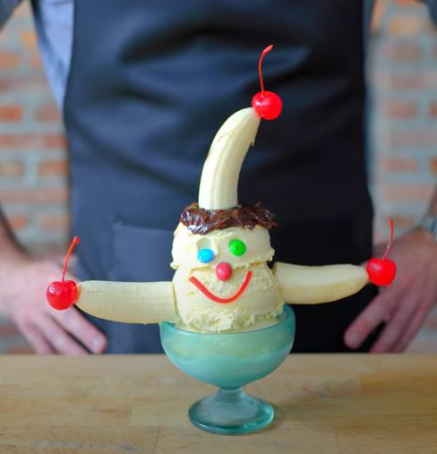

Plantain Fritters

Prep: 4 mins
Cook: 5 mins
Total: 9 mins
Servings: 2
Yield: 2 plantains
Ingredients
- 2 large ripe plantains or bananas, peeled
- 1 cup self-rising flour
- 1 small onion, cut into wedges
- 1/4 teaspoon salt
- Dash pepper
- Oil for deep-fat frying
Directions
- Place plantains in a food processor; cover and process until smooth. Add the flour, onion, salt and pepper; cover and process until blended (batter will be moist). In an electric skillet or deep-fat fryer, heat 1/4 in. of oil to 375°.
- Drop tablespoonfuls of batter, a few at a time, into hot oil. Cook for 1 minute on each side or until golden brown. Drain on paper towels.
|
$5 Milkshake from Pulp Fiction

Prep: 5 mins
Cook: 2 mins
Total: 7 mins
Servings: 1
Yield: 1 Milkshake
Ingredients
- 12 ounces ice cream
- 6 ounces milk
- 1 shot bourbon
- 1 cherry
- Whipped cream
- 1 tablespoon shaved chocolate
Directions
- Combine ice cream, milk, and bourbon in a blender
- Blend to desired consistency
- Pour blend into tall glass
- Garnish with whipped cream, cherry, and shaved chocolate
Original Recipe
|
Krabby Patty from Spongebob Squarepants

Prep: 30 mins
Cook: 10-15 mins
Total: 40-45 mins
Servings: 4
Yield: 4 Krabby Patties
Ingredients
- 1 pound chuck beef
- 1 pound bone-in short ribs
- 2 teaspoons MSG
- 2 tablespoons vegetable oil
- 2 ounces shredded iceberg lettuce
- 1 slice cheese
- 1 vidalia onion, sliced thin
- 1 tomato, sliced thin
- 1 pickle, sliced thin
- 4 sesame seed buns
- Condiments & Seasoning
Directions
- Cut beef into 1-inch pieces, placing them on a baking sheet to freeze for 15 mins
- Pulse frozen beef in a food processor until beef is ground
- Form four patties and season as desired
- Sear patties over medium heat to desired doneness
- For each pair of buns, assemble beef, lettuce, cheese, onion, pickle, tomato, and desired condiments
Original Recipe
|
Curly Fries from Breaking Bad

Prep: 20 mins
Cook: 5 mins
Total: 25 mins
Servings: 2
Yield: 2 Baskets of Curly Fries
Ingredients
- 2 russet potatoes, spiralized
- 15 grams smoked paprika
- 60 grams all-purpose flour
- 15 grams cayenne pepper
- 6 grams onion powder
- 1 quart peanut oil
- 150 grams water
- Additional Seasoning
Directions
- Place spiralized potatoes into boiling water for 15 minutes
- Pat potatoes dry
- Assemble the paprika, flour, cayenne pepper, onion powder, and additional seasoning in a large bowl
- Add the water to the large bowl and whisk to form a batter
- Dredge the potatoes in the batter evenly
- With the oil heated to 350 degrees, fry the potatoes for 2-5 mins
- Drain, season, and serve
Original Recipe
|
Triple Gooberberry Sunrise

Prep: 60 mins
Cook: 2 mins
Total: 62 mins
Servings: 1
Yield: 1 dessert
Ingredients
- 3 scoops ice cream
- 2 bananas, peeled & halved
- 3 cherries
- 3 M&M's
- 1 licorice string
- Chocolate Fudge
Directions
- Skewer bananas with toothpicks and freeze for 1 hour
- Place spoonful of fudge atop the top scoop
- Place 1 slice of banana on top, and one on each side in the middle
- To form the face, place M&M's for eyes and nose, with the licorice for the mouth
- Skewer a cherry to the end of each banana
Original Recipe
|